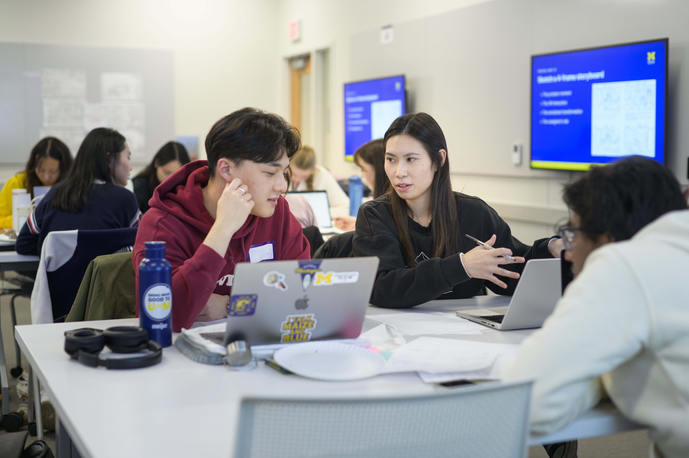

Launch Your Engaged Learning Journey
Transform your academic knowledge into real-world impact. Use this guide to understand your project context, evaluate team readiness, establish expectations, and begin a productive partnership.

Why the Work Starts Before the Project
Engaged learning at UMSI is fundamentally different from traditional classroom assignments. You are stepping out of controlled environments and into complex, unscripted ecosystems where technical solutions intersect with human lives, organizational cultures, and real community needs.
The initial phase of a project is rarely about jumping straight into execution—it is about building the foundation for ethical, sustainable engagement. Taking time to reflect on your own positionality, audit your team’s collective skills, and listen deeply to your partner’s goals prevents project failure down the line. When you ground your project in mutual respect, clear boundaries, and honest communication from Day 1, you transform a simple class deliverable into a reciprocal partnership that creates authentic value for everyone involved.
Phase 1: Preparing for the Experience
Before creating a solution, take time to understand the context, evaluate your team's readiness, and identify what you still need to learn.
Approach the Work as a Collaborative Learner
Before writing code, sketching wireframes, or analyzing data, consider how your identity and previous experiences influence the way you understand the project.
Your role is not to enter an organization or community as an outside expert who will fix a problem. Your role is to listen, ask questions, contribute your developing expertise, and work alongside people who understand their organization and community.
Preparation Goals
- Develop social and community awareness: Examine your identity, positionality, assumptions, and privileges. Learn about the community's history and consider how power may affect participation and decision-making.
- Understand expectations: Review program requirements, project commitments, leadership responsibilities, deadlines, and expected outcomes before beginning the work.
- Assess team readiness: Identify each team member's skills, interests, availability, responsibilities, and learning goals. Determine where the team may need additional knowledge or support.
- Begin project scoping: Learn about the organization's needs, intended users, constraints, and desired outcomes before committing to a solution.
Questions to Consider
- What do I hope to learn from this experience?
- Who will be affected by the project and its outcomes?
- What assumptions am I making about the partner, community, or project?
- What knowledge and skills does my team already have?
- What knowledge or perspectives are missing from our team?
- How will the partner participate in project decisions?
- What would a mutually beneficial outcome look like?
Recommended Preparation Process
- Reflect on your position: Identify the experiences, identities, assumptions, and areas of privilege that may shape your approach.
- Learn about the context: Research the organization, community, project history, affected stakeholders, and broader social conditions.
- Set learning goals: Record the technical, professional, interpersonal, and ethical skills you want to develop.
- Review team capacity: Compare the team's skills and availability with the likely needs of the project.
- Identify open questions: Write down what your team needs to learn from the partner before confirming the project's scope, methods, or deliverables.
Featured Preparation Resources
Phase 2: Starting the Experience
Once your team has prepared for the experience, the next step is turning your project ideas into a clear and professional partnership. This phase focuses on communicating with your partner, holding productive first meetings, and establishing shared expectations.
Start the Partnership Strong
First impressions can shape the direction of a project. Early communication gives your team and partner an opportunity to clarify goals, responsibilities, project boundaries, and expectations before the work begins.
Use your first interactions to listen carefully, ask questions, and make sure your team and partner have a shared understanding of the project.
Starting Goals
- Communicate professionally: Create clear and respectful communication with your client or community partner.
- Plan productive first meetings: Use agendas and prepared questions to establish project goals, roles, and boundaries.
- Align expectations: Make sure your team and partner understand responsibilities, timelines, communication practices, and expected outcomes.
- Formalize agreements: Document important decisions so that team members and partners have a shared understanding of the project.
Questions to Discuss with Your Partner
- What does the partner hope this project will accomplish?
- Who are the primary stakeholders or users?
- What responsibilities belong to the student team and the partner?
- How and how often should the team communicate with the partner?
- What are the important deadlines and milestones?
- How will changes to the project scope be discussed and approved?
Featured Starting Resources
- Initial Client Email Examples: Examples for making professional first contact with clients and partners.
- Initial Client Meeting Sample Agenda: Guidance for structuring a productive kickoff meeting.
- Ginsberg Center Student-Client Partnership Toolkit: Guidance for developing reciprocal and respectful community partnerships.
- Student-Client Partnership Guide: Guidelines for managing expectations and project deliverables.
- Student Org-ELO Partnership Agreement Template: A resource for establishing roles between student teams and the ELO.
- SO-ELL Schedule: An overview of important project milestones, deadlines, and submission dates.